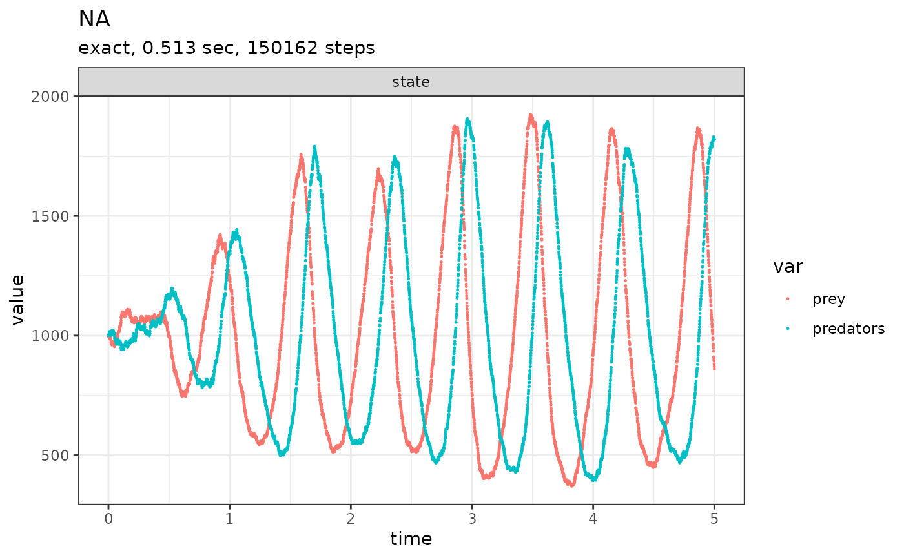

Main interface function to the implemented SSA methods. Runs a
single realization of a predefined system. For a detailed explanation
on how to set up your first SSA system, check the introduction
vignette: vignette("an_introduction", package = "GillespieSSA2").
If you're transitioning from GillespieSSA to GillespieSSA2,
check out the corresponding vignette:
vignette("converting_from_GillespieSSA", package = "GillespieSSA2").
Usage
ssa(
initial_state,
reactions,
final_time,
params = NULL,
method = ssa_exact(),
census_interval = 0,
stop_on_neg_state = TRUE,
max_walltime = Inf,
log_propensity = FALSE,
log_firings = FALSE,
log_buffer = FALSE,
verbose = FALSE,
console_interval = 1,
sim_name = NA_character_,
return_simulator = FALSE
)Arguments
- initial_state
[named numeric vector]The initial state to start the simulation with.- reactions
A list of reactions, see
reaction().- final_time
[numeric]The final simulation time.- params
[named numeric vector]Constant parameters to be used in the propensity functions.- method
[ssa_method]] Which SSA algorithm to use. Must be one of:ssa_exact(),ssa_btl(), orssa_etl().- census_interval
[numeric]The approximate interval between recording the state of the system. Setting this parameter to0will cause each state to be recorded, and toInfwill cause only the end state to be recorded.- stop_on_neg_state
[logical]Whether or not to stop the simulation when the a negative value in the state has occured. This can occur, for instance, in thessa_etl()method.- max_walltime
[numeric]The maximum duration (in seconds) that the simulation is allowed to run for before terminated.- log_propensity
[logical]Whether or not to store the propensity values at each census.- log_firings
[logical]Whether or not to store number of firings of each reaction between censuses.- log_buffer
[logical]Whether or not to store the buffer at each census.- verbose
[logical]IfTRUE, intermediary information pertaining to the simulation will be displayed.- console_interval
[numeric]The approximate interval between intermediary information outputs.- sim_name
[character]An optional name for the simulation.- return_simulator
Whether to return the simulator itself, instead of the output.
Value
Returns a list containing the output of the simulation:
out[["time"]]:[numeric]The simulation time at which a census was performed.out[["state"]]:[numeric matrix]The number of individuals at those time points.out[["propensity"]]:[numeric matrix]Iflog_propensityisTRUE, the propensity value of each reaction at each time point.out[["firings"]]:[numeric matrix]Iflog_firingsisTRUE, the number of firings between two time points.out[["buffer"]]:[numeric matrix]Iflog_bufferisTRUE, the buffer values at each time point.out[["stats"]]:[data frame]Various stats:$method: The name of the SSA method used.$sim_name: The name of the simulation, if provided.$sim_time_exceeded: Whether the simulation stopped because the final simulation time was reached.$all_zero_state: Whether an extinction has occurred.$negative_state: Whether a negative state has occurred. If an SSA method other thanssa_etl()is used, this indicates a mistake in the provided reaction effects.$all_zero_propensity: Whether the simulation stopped because all propensity values are zero.$negative_propensity: Whether a negative propensity value has occurred. If so, there is likely a mistake in the provided reaction propensity functions.$walltime_exceeded: Whether the simulation stopped because the maximum execution time has been reached.$walltime_elapsed: The duration of the simulation.$num_steps: The number of steps performed.$dtime_mean: The mean time increment per step.$dtime_sd: THe standard deviation of time increments.$firings_mean: The mean number of firings per step.$firings_sd: The standard deviation of the number of firings.
Details
Substantial improvements in speed and accuracy can be obtained by
adjusting the additional (and optional) ssa arguments. By default
ssa uses conservative parameters (o.a. ssa_exact()) which prioritise
computational accuracy over computational speed.
Approximate methods (ssa_etl() and ssa_btl()) are not fool proof!
Some tweaking might be required for a stochastic model to run appropriately.
See also
GillespieSSA2 for a high level explanation of the package
Examples
# \donttest{
initial_state <- c(prey = 1000, predators = 1000)
params <- c(c1 = 10, c2 = 0.01, c3 = 10)
reactions <- list(
# propensity function effects name for reaction
reaction(~c1 * prey, c(prey = +1), "prey_up"),
reaction(~c2 * prey * predators, c(prey = -1, predators = +1), "predation"),
reaction(~c3 * predators, c(predators = -1), "pred_down")
)
out <-
ssa(
initial_state = initial_state,
reactions = reactions,
params = params,
method = ssa_exact(),
final_time = 5,
census_interval = .001,
verbose = TRUE
)
#> Running SSA exact with console output every 1 seconds
#> walltime: 0, sim_time: 0
#> SSA finished!
plot_ssa(out)

# }